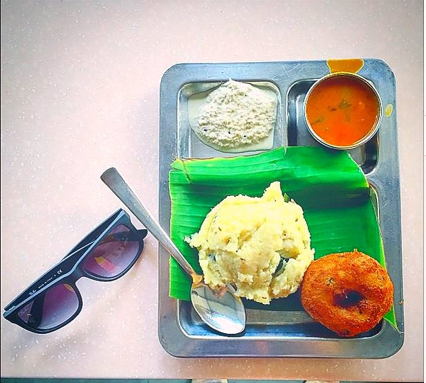

Contains: nuts
Ingredients
Quantities for 4.
- 1 cup raw, cooked firm and spread out to cool Rice
- large lime-sized ball, soaked in 1.5 cups hot water Tamarind
- 6 tbsp Sesame Oilcold-pressed gingelly oil; the dish is built on it
- 1 tsp Mustard Seeds
- 2 tbsp Chana Dal
- 1 tbsp Urad Dal
- 4 tbsp, raw Peanut
- 5, broken Dried Red Chilli
- 1/2 tsp, dry-roasted and powdered Fenugreek Seedsbitter if you use more
- 1 tsp, dry-roasted and coarsely powdered Black Pepper
- 1 tsp Coriander Powder
- 1 tbsp, dry-roasted and powdered Sesameoptional
- 1/2 tsp Turmeric
- 1/2 tsp Asafoetidause compounded-free hing to keep this gluten-free
- 2 sprigs Curry Leaves
- 1 tsp, grated Jaggery
- to taste Salt
Cookware
stovetop, kadhai
Before you start
- Soak the tamarind in hot water 20 minutes, then squeeze hard and strain. You want about 1.25 cups of thick extract.
- Dry-roast the fenugreek, pepper and sesame separately on low heat, cool them, and grind to a coarse powder.
- Cook the rice with 1.75 cups water so it stays separate, then spread it out and cool it completely.
Method
- Heat 4 tbsp sesame oil in a heavy kadhai and pop the mustard seeds.
- Add the peanuts, chana dal and urad dal and fry until all three are deep gold, about 3 minutes.
- Add the red chillies, curry leaves and hing and fry 20 seconds until the chillies puff.
- Pour in the tamarind extract with the turmeric, coriander powder, jaggery and salt. It will spit, so stand back.
- Simmer on medium heat for 15 to 20 minutes until the paste thickens, darkens and the oil separates and pools at the edges.This oil-separation is the doneness test; before it, the rice tastes raw and sour.
- Stir in the roasted fenugreek, pepper and sesame powder and cook 1 minute more, then take it off the heat.
- Fold roughly half the paste into the cooled rice with the remaining 2 tbsp sesame oil.Add the paste in stages and taste. Puliyodarai should be tangy, not punishing.
- Rest at least 30 minutes before serving so the rice takes on the colour evenly.It genuinely improves after a couple of hours.
Storage
The tamarind paste keeps 3 weeks refrigerated in a clean jar under a film of sesame oil. Mixed rice keeps 2 days at room temperature.
Nutrition Medium estimate
| Per serving112 g | Per 100 g | |
|---|---|---|
| Calories | 523+ kcal | 467+ kcal |
| Protein | 10.1+ g | 9+ g |
| Carbohydrate | 50.8+ g | 45+ g |
| of which sugars | 2.6+ g | 2+ g |
| Fibre | 3.9+ g | 4+ g |
| Fat | 32.1+ g | 29+ g |
| of which saturated | 4.5+ g | 4+ g |
| of which unsaturated | 26.0+ g | 23+ g |
The + means ingredients given to taste rather than by weight are counted as zero, so the true figure is a little higher than shown. Worked out from the listed quantities. Some of the ingredient list is given to taste rather than by weight, so treat these as a guide. Ingredients given to taste rather than by weight are counted as zero, so the real figure is a little higher than this. The + says so. Some ingredients have no exact match in the nutrient database and use the nearest equivalent: asafoetida, curry leaves, jaggery, urad dal. Estimated from raw ingredients using USDA FoodData Central. Cooking changes are not modelled, and added salt is excluded, so sodium is not given.
Recipe v1.0.0, last updated 2026-07-31. Curated for Khaana and kept under version control.